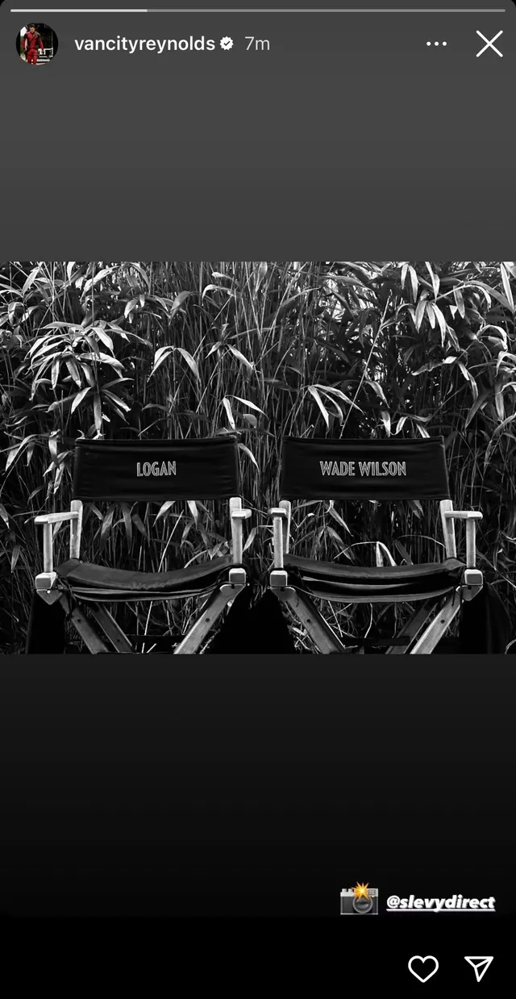
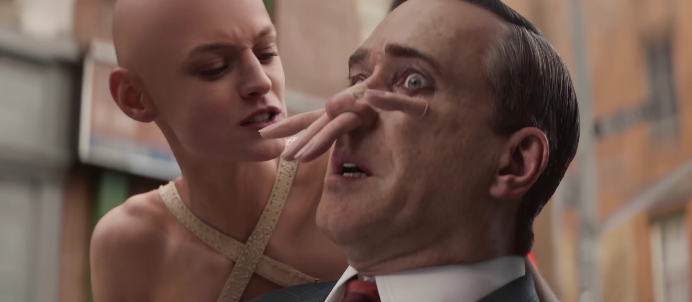
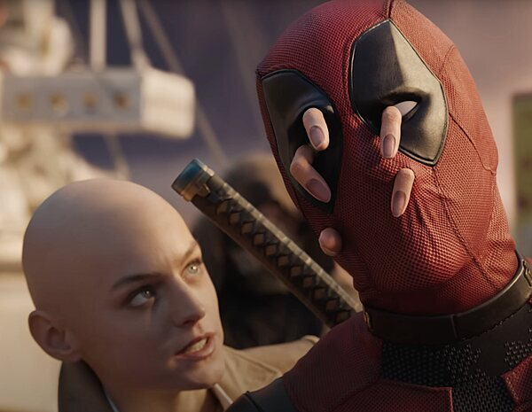

Deadpool 3 sigue la historia de Wade Wilson , conocido como Deadpool, un antihéroe con un sentido del humor pesado y políticamente incorrecto. En esta entrega, Deadpool se encuentra con Wolverine debido a un accidente con los viajes en el tiempo. Juntos, los dos estan obligados a colaborar entre sí para enfrentarse a un amenaza mayor en un universo alternativo.
Contexto
Esta película se ubica dentro del Universo Cinematográfico de Marvel (UCM), siendo así la primera aparición oficial de Deadpool bajo el paraguas de Disney y Marvel Studios tras la compra de 20th Century Fox. Además, marca el regreso de Hugh Jackman como Wolverine, un personaje muy querido que había tenido su despedida en la película Logan (2017).
Análisis
Deadpool 3 mantiene la escencia del humor negro de sus otras películas, referencias a la cultura pop y momentos de acción exagerada. Lo interesante aquí está en la coordinación entre Deadpool y Wolverine, dos personajes opuestos que crean momentos divertidos y tensos a la vez. Esta película también representa desafío de Marvel por integrar personajes de franquicias anteriores, creando un cruce entre el tono maduro de Deadpool y la estructura más tradicional del UCM.
Localización de la película
Comenzó en mayo de 2023 en Pinewood Studios e Inglaterra
Localicaciones: Además de los estudios, se filmó enNorfolk , Los Ángeles y en Bovingdon Film Studio
Interrupción: La producción se suspendió en julio debido a la huelga SAG-AFTRA de 2023.
Luego de las huelgas, Ryan Reynolds publicó en su cuenta de instragram esta historia

Celebrando así el regreso del rodaje. Se reanudó meses antes de que comience navidad.
Curiosidades: de película bajo presupuestaria a superproducción con Wolverine
Ryan Reynolds tenía un total de tres ideas diferentes para la película antes de juntarse nuevamente con Hugh Jackman . Toda historia pasa por procesos en el que van quedando o se van descartando ideas, una de las que tenia Ryan Reynolds era algo que probablemente a la gente no le hubiese gustado. Una de sus primeras ideas era contar con un presupuesto muy bajo entre 5 y 6 millones de dolares. De esta forma la pelicula no tendria efectos especiales y seria un formato que se describió como "pelicula de bajo presupuesto"
“Era solo un viaje con algunas cosas que recogimos y vimos en el camino. No estaba pensado para ser una película de evento”, explicó Reynolds. “Me gustó. Pensé que era algo divertido”, añadió el actor canadiense que, como ya se sabe, terminó descartando la idea de trabajar con un presupuesto bajo por completo, a medida que el proyecto fue evolucionando.
Shawn Levy no quería dirigir “Deadpool 3”
Un componente crucial para la realización de la tercera parte de la saga fue las colaboraciones previas que Reynolds tuvo con Levy, sin embargo no fue fácil convencerlo para que haga la tercera película de deadpool 3. Fue Hugh Jackman quien le sugirió a Shawn Levy de trabajar en el rodaje. Levy, dirigió películas como Una noche en el museo, Más barato por docena y Aprendices fuera de línea, mostró en un principio interés para unirse al proyecto. “Me ofrecen algunas películas basadas en propiedad intelectual cada semana, y prácticamente siempre las rechazo porque necesito sentir que veo una historia que vale la pena contar”, comentó el director canadiense.
Lo más cerca que Levy había estado de dirigir un film de superhéroes fue cuando casi aceptó trabajar en The Flash junto a Ezra Miller (largometraje que terminó siendo un fracaso de taquilla y crítica)
Así crearon los aterradores dedos de Cassandra Nova en 'Deadpool 3': no usaron CGI
 
Resulta que dicho personaje se caracteriza por tener unos dedos extremadamente largos y, para la película, se quiso conservar este importante detalle. Sin embargo, estos no fueron creados con CGI , la tecnología habitual en las películas de superhéroes, ni eran los dedos reales de la actriz Emma Corrin, quien interpreta a Cassandra. Entonces, ¿cómo se logró este efecto tan realista?
El equipo de efectos especiales de Deadpool 3 reveló que, para darle vida a estos inusuales dedos, se optó por un enfoque práctico y creativo. Se decidió usar prótesis hechas a medida, diseñadas específicamente para el personaje diseñadas específicamente para el personaje. Estas fueron creadas por un equipo de expertos en maquillaje, que trabajaron en conjunto con los diseñadores de vestuario para garantizar que los dedos se vieran lo más naturales posible, pero a la vez extraños y distintivos debido a su longitud.